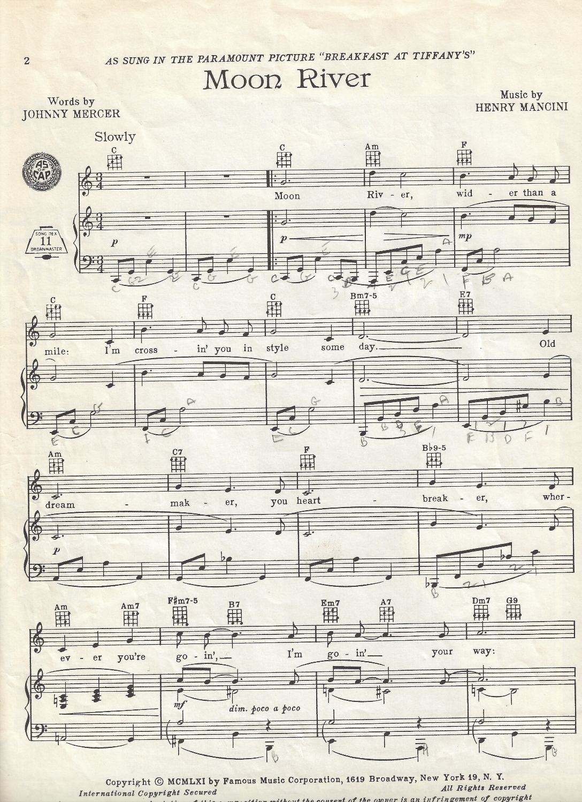

Task 1 – Choose a Theme
For this project, I chose to focus on movie soundtracks. I have been a lifelong movie lover, and I was able to narrow my choices down through a process of liminations. I am particularly interested in how music in film creates emotion for audiences, and how songs can take on new meanings when they are listened to outside of the film. This led me to choose the song from the cinema classic Breakfast at Tiffany’s as my main piece of analysis. I was inspired by the score Moon River from Breakfast at Tiffany's 1961... Vocals by Audrey Hepburn, the film and fashion icon. Moon River is a song that has been remixed, covered and pulled inspiration from. A favourite of mine is Frank Ocean's Moon River 2018, a contemporary R&B cover of the song. Another popular 'Frank' who has covered Moon River is Frank Sinatra in 1964.
Task 2 – Current Reflections
I found very many different versions of “Moon River” online, or instance official releases, karaokes, covers, instrumental covers, and modern interpretations (one of my favourites) circulating on both Spotify and YouTube. I think it's particularly fascinating how film music continues to evolve even half a century later. Additionally, I am fascinated how music continues to grow after it's debut in the cinema. I will explore how these versions differ in their musical features throughout the next few weeks. Due to the huge success and legacy of Moon River, I will face challeneges with copyright, as scores are heavily copyrighted as they are, nevermind a score being pulled from a film. Scores in films are not always the eact version or same score as the original. For instance, it may be shortened, repeated or remixed. Additionally, ther are multiple versions/arrangements; metadata inconsistency between archives; varied file formats (score, MIDI, audio). Lastly, I have very little to none experience in coding and I find this all a little overwhelming and daunting, however since we are dealing with music data, and that is the key topic, I am sure I will find some familiaity and comfort in music sheets and design etc. I will collect notated scores, metadata, and audio recordings for versions of "Moon River"
My Initial Material Collected
I sourced the original sheet music for “Moon River” to give me symbolic music data. This will allow me to compare the written score with different audio versions later in the project. It also allows for this project to have an authentic feel.

Cover of sheet music: “Moon River”
Page 2 of "Moon River"